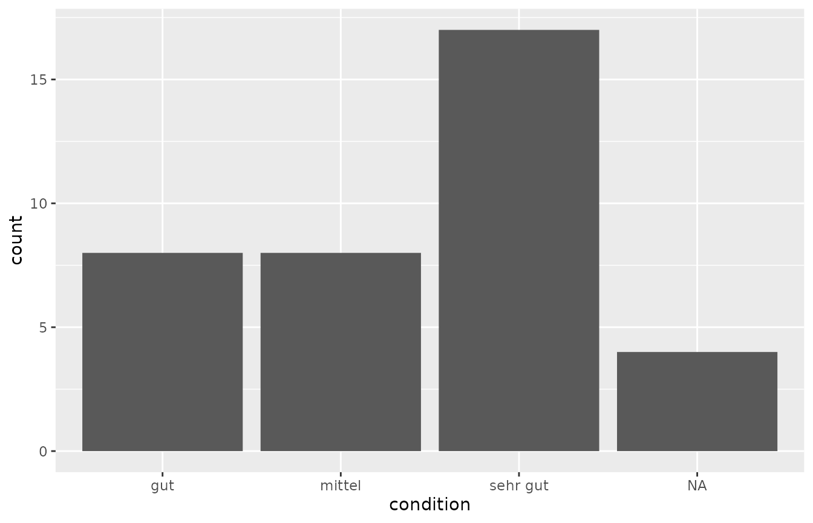

idaifieldR is able to import the database from an
iDAI.field Client into R in a format that is easily usable with basic R
functionality.
After loading the package, you first need to establish a connection
to the database. This will only work if the Client is running. This is
done with a connection object that is produced by
connect_idaifield():
connection <- connect_idaifield(serverip = "127.0.0.1",
user = "R",
pwd = "hallo")If you wish to import the complete database into R, you can use
get_idaifield_docs() with the default options. Be aware
that this can take a long time depending on the size of
your database. Just to give you an impressing: I regularly work with ca.
4000 resources, and the import takes roughly 20 seconds while the
resulting idaifield_resources-object is around 20MB in
size.
all_resources <- get_idaifield_docs(connection = connection,
projectname = "rtest",
raw = FALSE)This will return a list that still resembles the original JSON-format of Fields database:
all_resources[[1]]
#> $relations
#> $relations$isRecordedIn
#> $relations$isRecordedIn[[1]]
#> [1] "15754929-dd98-acfa-bfc2-016b4d5582fe"
#>
#>
#> $relations$liesWithin
#> $relations$liesWithin[[1]]
#> [1] "bf06c7b0-dba0-dcfa-6d8e-3b3509fee5b6"
#>
#>
#>
#> $identifier
#> [1] "Befund_6"
#>
#> $processor
#> $processor[[1]]
#> [1] "Henriëtte Sönderßeichen"
#>
#>
#> $campaign
#> $campaign[[1]]
#> [1] "2021"
#>
#>
#> $id
#> [1] "02932bc4-22ce-3080-a205-e050b489c0c2"
#>
#> $type
#> [1] "Layer"Additionally, using the object that contains all resources, you can generate an index of the database which is handy for some other functions or to get a general impression of what is there:
uidlist <- get_uid_list(all_resources, verbose = TRUE, gather_trenches = TRUE)
head(uidlist)
#> type UID identifier
#> 1 Layer 02932bc4-22ce-3080-a205-e050b489c0c2 Befund_6
#> 2 Survey 031179fb-ac01-6b29-b6fc-b1b486d9bff8 Surveyareal 1
#> 3 Bone 0324141a-8201-c5dc-631b-4dded4552ac4 KNOCHEN_1
#> 4 Pottery 0569d787-aa67-e105-3a27-cba29012e78e Befund_6_KER_4
#> 5 Pottery 0860b5a5-4602-9feb-fabb-85610298bd93 Befund_6_KER_18
#> 6 Mollusk 0cc6771c-5532-467f-90af-eb3bbd326437 MOLLUSK_cm_meas_dimTest
#> isRecordedIn liesWithin shortDescription liesWithinLayer
#> 1 Schnitt 1 SE02 <NA> NA
#> 2 <NA> Weniger_schöner_Ort <NA> NA
#> 3 Schnitt 1 Grab_1 <NA> NA
#> 4 Schnitt 1 Befund_6 <NA> NA
#> 5 Schnitt 1 Befund_6 <NA> NA
#> 6 Schnitt 1 Befund_5 DO NOT CHANGE NA
#> Place
#> 1 Schöner_Ort
#> 2 Weniger_schöner_Ort
#> 3 Schöner_Ort
#> 4 Schöner_Ort
#> 5 Schöner_Ort
#> 6 Schöner_OrtTo make the list more usable and to fix the values of fields that may
otherwise display UIDs (as relations are stored this way in the
database), you can use the function simplify_idaifield().
Depending on the size of you database it may take a while to process.
You can decide whether you want to replace the UIDs with their
corresponding identifiers, and whether you want to use the geometry
attached to each resource.
all_resources <- simplify_idaifield(all_resources,
keep_geometry = FALSE,
replace_uids = TRUE)
#> No Configuration found!
all_resources[[1]]
#> $identifier
#> [1] "Befund_6"
#>
#> $processor
#> $processor[[1]]
#> [1] "Henriëtte Sönderßeichen"
#>
#>
#> $campaign
#> $campaign[[1]]
#> [1] "2021"
#>
#>
#> $id
#> [1] "02932bc4-22ce-3080-a205-e050b489c0c2"
#>
#> $type
#> [1] "Layer"
#>
#> $relation.isRecordedIn
#> [1] "Schnitt 1"
#>
#> $relation.liesWithin
#> [1] "SE02"
#>
#> $relation.liesWithinLayer
#> [1] NAidaifieldR contains a custom function to convert the
list returned by the import functions simplify_idaifield(),
idf_query() and idf_index_query() into a
matrix. For your convenience, you should probably convert this into a
data.frame and try to assign the column type automatically:
all_resources <- idaifield_as_matrix(all_resources)
df <- as.data.frame(all_resources)
df <- type.convert(df, as.is = TRUE)
str(df[,1:10])
#> 'data.frame': 75 obs. of 10 variables:
#> $ identifier : chr "Befund_6" "Surveyareal 1" "KNOCHEN_1" "Befund_6_KER_4" ...
#> $ type : chr "Layer" "Survey" "Bone" "Pottery" ...
#> $ shortDescription : chr NA NA NA NA ...
#> $ processor : chr "Henriëtte Sönderßeichen" "Henriëtte Sönderßeichen" "Anna Allgemeinperson" "Anna Allgemeinperson" ...
#> $ campaign : int 2021 NA 2021 2021 2021 2021 2021 2021 2021 2021 ...
#> $ relation.isRecordedIn: chr "Schnitt 1" NA "Schnitt 1" "Schnitt 1" ...
#> $ amount : int NA NA NA 1 2 3 NA 1 NA NA ...
#> $ amountSherdsBase : int NA NA NA 2 2 NA NA 2 NA NA ...
#> $ amountSherdsHandles : int NA NA NA 2 3 NA NA 2 NA NA ...
#> $ amountSherdsLid : int NA NA NA NA NA NA NA 0 NA NA ...Queries
If the import of all resources takes too long, it is possible to query the database:
pottery <- idf_query(connection, projectname = "rtest",
field = "type",
value = "Pottery",
uidlist = uidlist)
pottery <- idaifield_as_matrix(pottery)
pottery_df <- as.data.frame(pottery)
pottery_df <- type.convert(pottery_df, as.is = TRUE)
head(pottery_df[,1:10])
#> identifier type shortDescription processor campaign
#> 1 Befund_6_KER_4 Pottery <NA> Anna Allgemeinperson 2021
#> 2 Befund_6_KER_18 Pottery <NA> Anna Allgemeinperson 2021
#> 3 KER_1 Pottery <NA> Anna Allgemeinperson 2021
#> 4 Befund_6_KER_1 Pottery <NA> Anna Allgemeinperson NA
#> 5 Befund_6_KER_8 Pottery <NA> Anna Allgemeinperson 2021
#> 6 Befund_6_KER_6 Pottery <NA> Anna Allgemeinperson 2021
#> relation.isRecordedIn amount amountSherdsBase amountSherdsHandles
#> 1 Schnitt 1 1 2 2
#> 2 Schnitt 1 2 2 3
#> 3 Schnitt 1 1 2 2
#> 4 Schnitt 1 NA NA NA
#> 5 Schnitt 1 1 9 2
#> 6 Schnitt 1 1 2 3
#> amountSherdsLid
#> 1 NA
#> 2 NA
#> 3 0
#> 4 NA
#> 5 NA
#> 6 NAHowever, that functionality is currently very limited. If you need
more sophisticated queries, you can take a look at the documentation of
the sofa package, which allows complex queries. The results
can again be transformed with some functions from
idaifieldR.
Plotting
Getting the data into R allows you to flexible create plots and analysis, that can be re-run when more data is available in the Field-Database or at another time.
Some very basic examples:
library(ggplot2)
pottery <- as.data.frame(pottery)
ggplot(pottery, aes(x = relation.liesWithin)) +
geom_bar() You can do this with basically anthing that is in the database. Some variables may need reformating and cleaning, depending on your configuration and the state of the data.